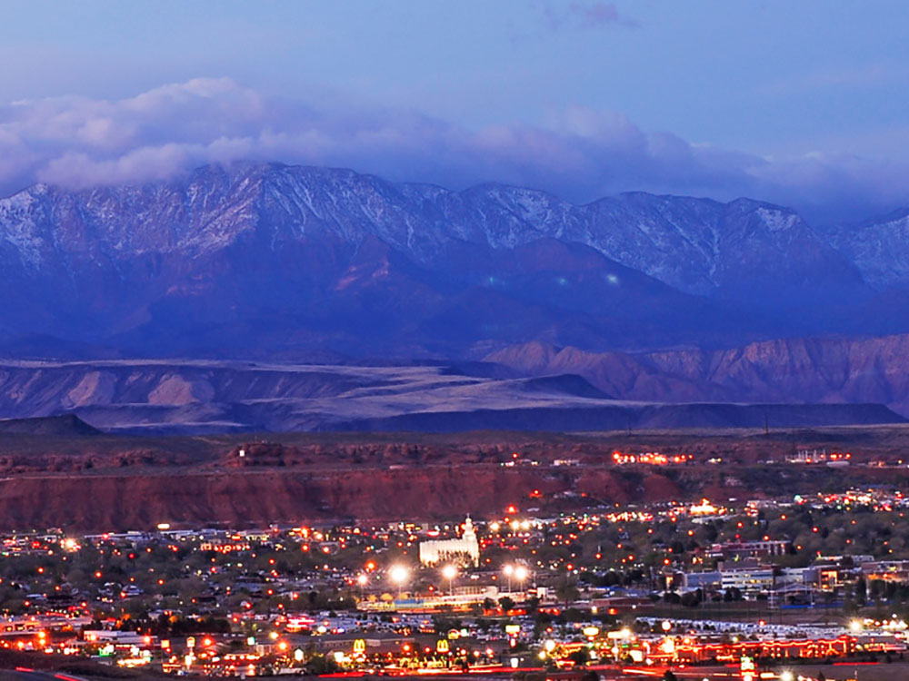
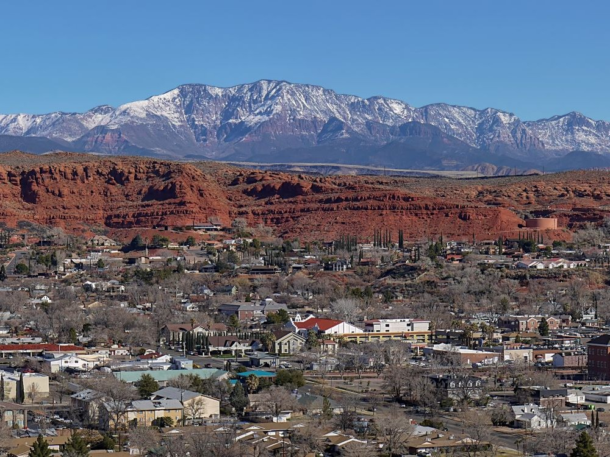

-400.jpg)
.jpg){kind=link}
City and region well known for its year-round outdoor recreation and proximity to several state parks, Zion National Park and The Grand Canyon
Places to See in St. George
-400.jpg)
Aspiration Trail
Dirt path winding through desert hills, lined with thousands of hand-painted rocks offering inspiration and creativity to hikers of all ages.
Fossil Falls Park
Custom-designed playground featuring a massive concrete slide, fossil-themed climbing structures, and shaded pavilions surrounded by scenic desert views.
Gunlock State Park
Desert oasis featuring a red rock reservoir ideal for boating, fishing, and seasonal waterfall viewing, with primitive campsites and year-round recreation.
Hamblin Home
Historic pioneer home offering free guided tours and authentic 19th-century furnishings that reflect the life and legacy of a frontier diplomat and missionary.
Red Hills Desert Garden
Interactive botanical garden showcasing desert plants, prehistoric fossils, and a stream with native fish, all set within a scenic red rock landscape.
Pioneer Park
Red rock recreation area featuring slot canyons, panoramic overlooks, and natural formations ideal for hiking, climbing, and exploration.
Quail Creek State Park
Featuring a 600-acre (240 ha) reservoir park offers camping, boating, swimming, and fishing.
Red Cliffs National Conservation Area
Conservation area's 130 miles of non-motorized trails provide world-class recreational opportunities while protecting crucial habitat. It encompasses two wilderness areas, the Red Cliffs Recreation Area, the Red Cliffs Campground, as well as heritage public use sites
Sand Hollow State Park
State park featuring a 1,322-acre reservoir and popular site for camping, fishing, boating, and ATV riding on nearby sand dunes.
Snow Canyon State Park
Park featuring a canyon carved from the red and white Navajo sandstone of the Red Mountains, as well as the extinct Santa Clara Volcano, lava tubes, lava flows, and sand dunes
St. George Utah Temple
Historic religious structure featuring pioneer-era architecture, ornate interior rooms, and a public visitors' center with exhibits and gardens.
Temple Quarry Trail
Scenic out-and-back trail featuring volcanic rock formations and historic quarry remnants used in early pioneer construction.
Virgin River Skimboard Park
Riverside recreation area featuring shallow flowing water designed for inland skimboarding, wading, wildlife observation, and family-friendly outdoor play.

Zion National Park
Park known for Zion Canyon, with deep canyon walls of reddish and tan-colored Navajo Sandstone eroded by the North Fork of the Virgin River, and includes mountains, canyons, buttes, mesas, monoliths, rivers, slot canyons, and natural arches
Overview
St. George is the largest city in southwestern Utah, with about 100,000 residents, on the Arizona border along the Virgin River. It is known for its red rock cliffs, its mild winters, and its position about an hour from Zion National Park, and it has become one of the fastest-growing metropolitan areas in the country.
Visitors and retirees come for the warm weather, for golf, road and mountain biking, and for hiking in Snow Canyon State Park and the Red Cliffs National Conservation Area. The city is also a base for Sand Hollow State Park and the Grand Canyon's North Rim, and it hosts events such as the St. George Marathon and IRONMAN 70.3.
History
The Paiute and earlier Ancestral Puebloan peoples lived in the area, and the Old Spanish Trail passed nearby. Mormon pioneers sent by Brigham Young founded St. George in 1861 as part of the "Cotton Mission," a plan to grow cotton in Utah's warmest region, and named the town for the church leader George A. Smith. The pioneers built the St. George Utah Temple, completed in 1877, and the sandstone tabernacle, and Brigham Young spent his winters in the town. Tourism, retirement, and outdoor recreation have driven growth since the 1970s.
Sightseeing and Popular Landmarks
The St. George Utah Temple, the first temple completed in Utah, and the St. George Tabernacle are the city's best-known historic buildings, and the Brigham Young Winter Home and the Jacob Hamblin Home show pioneer life. Pioneer Park, with Dixie Rock and the St. George Narrows, is a red sandstone playground, and Snow Canyon has lava tubes, sand dunes, and canyons. Zion National Park and Sand Hollow State Park are a short drive away.
Culture and Museums
The St. George Art Museum and the Dinosaur Discovery Site at Johnson Farm, which preserves well-known dinosaur tracks, are the city's main museums, and the St. George Children's Museum serves families. The Tuacahn Center for the Arts in nearby Ivins stages large productions in a red rock amphitheater, and the Cox Performing Arts Center and the Electric Theater host concerts and film. The St. George Art Festival is held each spring.
Parks
The city maintains dozens of parks, including Pioneer Park and the Red Hills Desert Garden, which displays native desert plants. The Virgin River Trail and the city's trail network include the Aspiration Trail, the Temple Quarry Trail, and Fossil Falls Park. Snow Canyon State Park, Sand Hollow State Park, and Quail Creek State Park are within about 20 to 30 minutes' drive for hiking, boating, and swimming.
Seasons and Weather
St. George has a hot desert climate at about 2,800 feet, and it is among the warmest cities in Utah. Summer highs are often above 100°F and nights stay warm, while winters are mild, with highs in the 50s°F and little snow. Spring and fall are the most popular times for outdoor visits, and monsoon thunderstorms can bring brief heavy rain in late summer.
This article uses material from Wikipedia as well as information from official tourism and institutional sources. Key references include Greater Zion Tourism Office, City of St. George, Utah State Parks, Bureau of Land Management, and National Weather Service Las Vegas. Wikipedia material is from the article "St. George, Utah", released under the Creative Commons Attribution-Share-Alike License 3.0.
-1000.jpg)
.jpg){kind=link}



